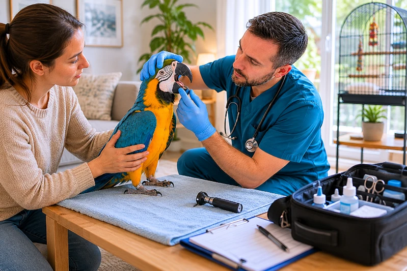

Tu servicio a domicilio: nos desplazamos
En nuestra clínica sabemos que no siempre es fácil desplazarse con tu mascota. Por eso, ponemos a tu disposición nuestro servicio de atención veterinaria a domicilio, pensado para ofrecer comodidad, tranquilidad y un cuidado personalizado sin salir de casa.
Nuestro equipo se desplaza hasta tu hogar para realizar consultas, revisiones generales, vacunaciones y seguimiento de tratamientos. Este servicio es especialmente útil para animales que se estresan durante los desplazamientos, mascotas con movilidad reducida o situaciones en las que el tiempo es un factor importante.
Atendemos no solo a perros y gatos, sino también a otros animales de compañía como conejos, aves o pequeños mamíferos, adaptando cada visita a sus necesidades específicas.
Trabajamos con el mismo compromiso, profesionalidad y cercanía que en nuestras instalaciones, garantizando una atención de calidad en un entorno familiar y seguro para tu mascota.
